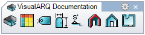

Stili di vano
vaVanoStili
Icona:

Tasto scorciatoia:
Lo stile di un vano definisce le caratteristiche del vano. Per ciascuno stile di vano, si possono definire i seguenti componenti: Attributi, Generale, Nome, Area e Perimetro.
Per creare uno stile di vano, premere il pulsante Nuovo stile nella finestra di dialogo Gestore degli stili. Selezionare lo stile di vano che si desidera definire ed usare le schede che appaiono sulla destra per specificare i seguenti parametri:
Editing generico
Si può usare il comando
vaVanoStili oppure, in alternativa,
- Usare il comando vaStileProprietà, quindi selezionare un vano e premere Invio, oppure
- Fare clic destro su
 , quindi selezionare un vano e premere Invio, oppure
, quindi selezionare un vano e premere Invio, oppure
- Selezionare un vano ed aprire il menu di scelta rapida con un clic destro prolungato, quindi selezionare Vano > Proprietà degli stili, oppure
- Premere Alt, Maiusc o Ctrl e quindi fare doppio clic su un oggetto vano.
Le modifiche applicate ad uno stile vengono applicate a
tutti gli elementi aventi quello stile.
Editing specifico per oggetto
- Usare il comando vaProprietà, quindi selezionare un vano e premere Invio, oppure
- Fare clic su , quindi selezionare un vano e premere Invio, oppure
- Selezionare un vano ed aprire il menu di scelta rapida con un clic destro prolungato, quindi selezionare Vano > Proprietà, oppure,
- Fare doppio clic su un oggetto vano.
Le modifiche vengono applicate solo allo stile dell'
elemento selezionato.
Attributi
Gli attributi definiscono le caratteristiche di ciascuno stile di vano ai fini della visualizzazione e della stampa. Gli attributi validi sono:
- Livello, visibilità, stile testo, stile quota, colore, tipo di linea, larghezza di stampa, colore di stampa, modello, scala del modello, angolo del modello e colore del modello.
Generali
Opzioni per definire il modo in cui si mostrano le informazioni nella legenda del vano:
- Mostra bordo
- Mostra nome
- Mostra area
- Mostra perimetro
Nome
Opzioni per definire il modo in cui si mostra il nome della stanza nella legenda del vano:
- Prefisso: Testo visualizzato prima del nome
- Suffisso: Testo visualizzato dopo il nome
Area
Opzioni per definire il modo in cui si mostra l'area della stanza nella legenda del vano:
- Prefisso: Testo visualizzato prima dell'area
- Suffisso: Testo visualizzato dopo l'area
Perimetro
Opzioni per definire il modo in cui si mostra il perimetro della stanza nella legenda del vano:
- Prefisso: Testo visualizzato prima del perimetro
- Suffisso: Testo visualizzato dopo il perimetro
 clic destro [clic sinistro]
clic destro [clic sinistro]